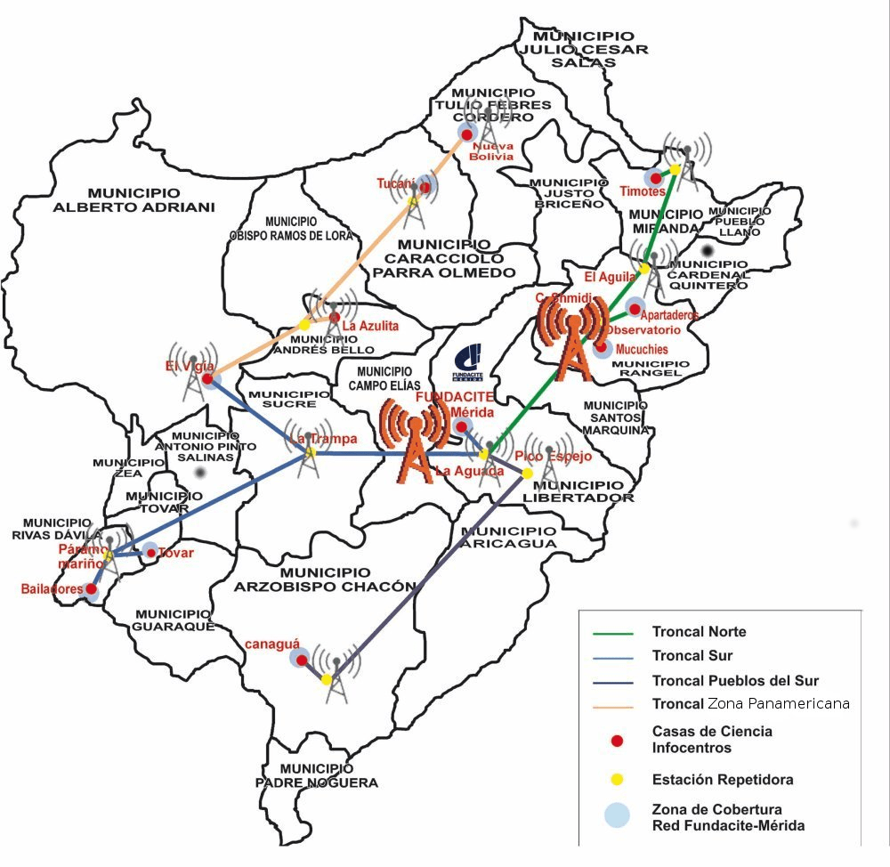

Fundacite posee actualmente la red inalambrica socialista del estado Mérida RISEM mas grande de Venezuela y unica en su tipo que abarca a 14 municipios conectados de los 23 que posee el estado a los que se les presta el servicio de internet como instituciones públicas y dependencias del estado; consta de una infraestructura montada a lo largo de varios municipios en el estado con topografias accidentadas, lo que limíta el acceso oportuno a los repetidores y sitios para atender fallas; en este sentido el sistema de gestión y monitoreo permitíra a los administradores realizar actividades y vizualizar parámetros que permitan diagnosticar comportamientos inadecuados de los equipos debido a latencias, trafico, jitter.
En el siguiente mapa se puede observar los repetidores ubicados en los diferentes municipios del estado Merída:
